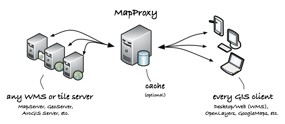
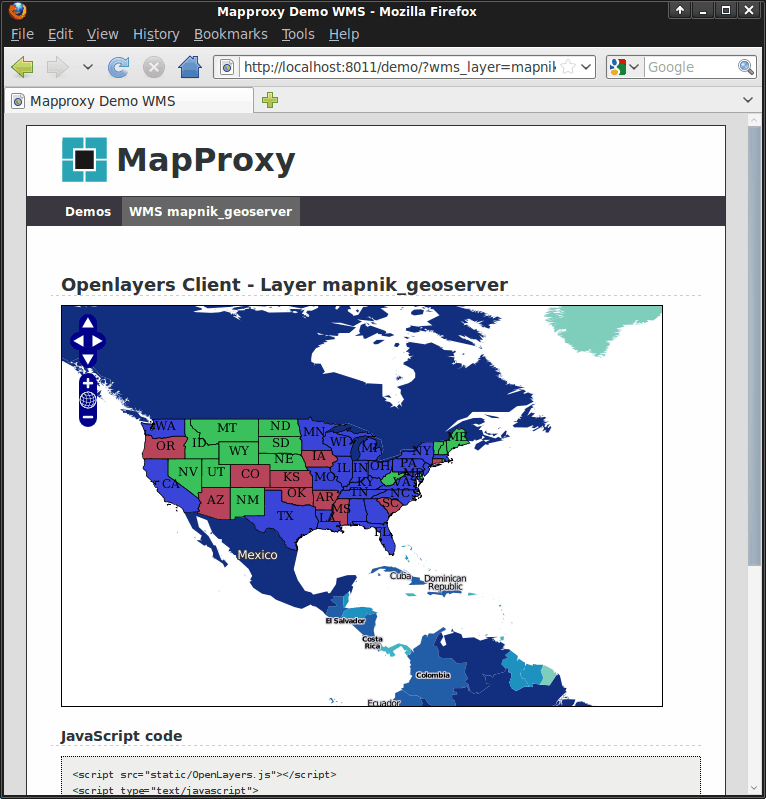

MapProxy¶
Proxy de WMS & servicios tile¶
MapProxy acelera las aplicaciones de mapeo al preprocesar e integrar mapas de múltiples fuentes y almacenarlos en un caché local. Las capas se pueden hacer transparentes, las proyecciones se pueden cambiar, las capas de mapas múltiples se pueden transformar en una, se pueden agregar marcas de agua y más …
MapProxy es flexible y escala casos de uso de simples a complejos: desde un solo caché de teselas para un OpenLayers cliente web, hasta un nodo SDI central que combina, unifica y acelera docenas de servicios WMS distribuidos.
{kind=link}
Características Principales¶
{kind=link}
- Fuentes de entrada:
- Servicios:
- WMS (1.0.0-1.3.0)
- TMS
- WMTS
- SuperOverlays KML
- Cache de tiles:
- almacena imágenes idénticas una sola vez (por ejemplo teselas del océano)
- mosaicos de caché en el sistema de archivos, MBTiles/SQLite, ArcGIS Compact Cache, S3, Redis, Riak, o CouchDB
- Añadir marca de agua a las teselas
- Opciones de fuente:
- limitar fuentes a geometrías (a partir de Shapefile por ejemplo)
- Añadir transparencia a las capas opacas
- combinar múltiples fuentes
- reproyectar WMS y fuentes de mosaico a otros SRS
- Características WMS:
- construcción de árboles de capas desde fuentes diferentes
- crear respuestas
GetMapde cache con soporte para zoom libre y cualquier proyección (para cualquier SIG de escritorio) - acelera los WMS 10 a 100 veces
- responde a solicitudes de
GetLegendGraphic - cascada las peticiones
GetFeatureInfocon transformaciones XSL en el opcionales - reproyecciónes al vuielo
- convertir versiones WMS y formatos de imagen
- Seguridad:
- API de autorización flexible y potente
- control granular sobre los servicios y capas
- restringir el acceso a las zonas de polígono (para WMS y servicios de teselas)
- integración con bases de datos de usuario existentes y métodos de autenticación
- Poderosas herramientas:
- herramienta germinal eficiente para el pre-llenado de caché que puede sembrar áreas de polígono con Shapefiles, GeoJSON, PostGIS o geometrías WKT
- exportación de caché de teselas a otros formatos
- calcular escalas y mostrar configuraciones de retícula
- Otras características:
- simple pero potente configuración de formato (YAML/JSON)
- Cliente demo basado en OpenLayers
- ejecuta múltiples servicios WMS en una instancia de MapProxy
- Añade líneas de atribución a las imágenes
- soporte para datos de no-imagen raster no como DEMs
- manipular bandas de imagen para crear imágenes en escala de grises o de falso color
- muchos más
Estándares implementados¶
MapProxy implementa las siguientes especificaciones abiertas:
- OGC WMS 1.0.0, 1.1.0, 1.1.1, 1.3.0
- OGC WMTS 1.0.0 (KVP y RESTful)
- OSGeo TMS 1.0.0
- OGC KML 2.2 SuperOverlays
Detalles¶
Website: https://mapproxy.org/
Licence: Apache Software License 2.0
Versión de software: 1.11.0
Plataformas compatibles: GNU/Linux, Mac OSX, MS Windows
Support: https://mapproxy.org/support